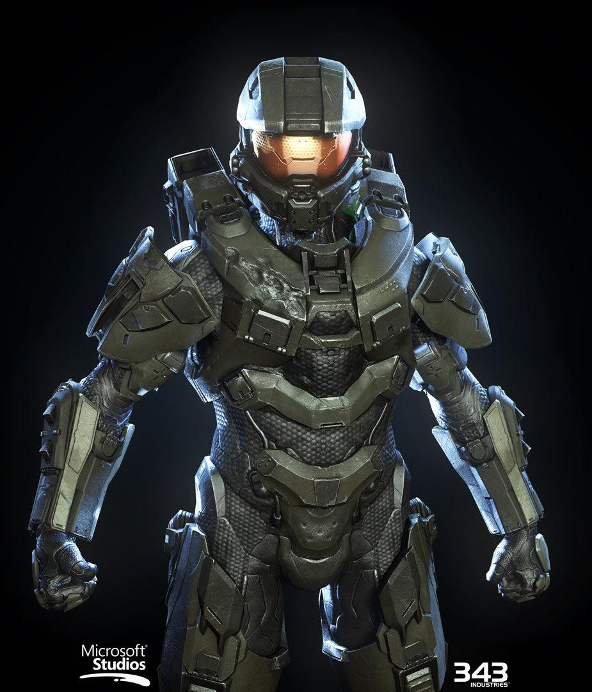
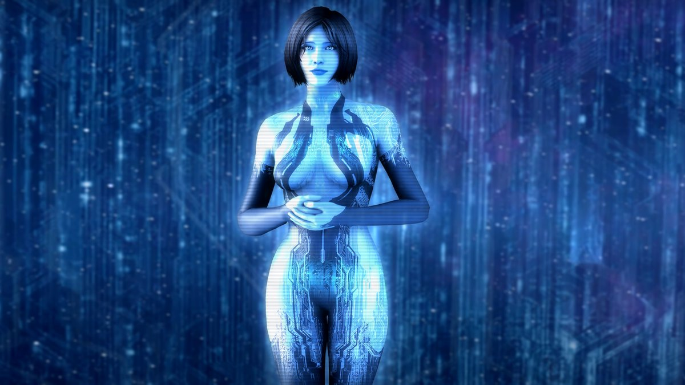

Master Chief Petty Officer John-117 is a Spartan-II supersoldier and humanity’s greatest defender. In Halo 4, he awakens from cryosleep aboard the UNSC Forward Unto Dawn and confronts the ancient Forerunner known as the Didact while trying to save Cortana from rampancy.

Cortana is an advanced AI created from Dr. Catherine Halsey’s cloned brain. In Halo 4, she suffers from rampancy, a terminal AI condition causing instability and system failure. Her emotional bond with Master Chief becomes the heart of the story.
| Character | Role | Special Ability |
|---|---|---|
| Master Chief | Spartan-II Super Soldier | Enhanced strength and MJOLNIR armor |
| Cortana | Artificial Intelligence | Hacking and tactical analysis |